phlox
07:30 · Centro de dia
Chegam trinta e quatro pessoas.
Cada uma com a sua medicação, os seus horários,
e uma família que quer saber como correu o dia.
A volta da manhã
0
/8
Registado no momento, não à noite de memória.
Medicação · manhã
08:00
Portal da família
A filha vê o dia
sem ter de telefonar.
Vê no telemóvel o que a mãe comeu, se tomou os comprimidos, e como esteve.
Maria A.
Hoje, 18:40
Num só sítio
O dia inteiro fica registado.
phlox
phloxclinical.com
Reproduzir
0.0s
·
R = modo de gravação